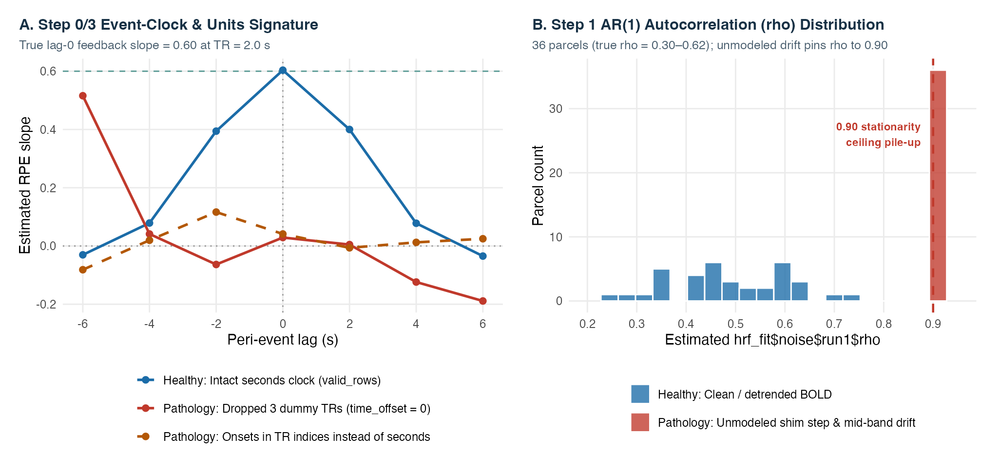
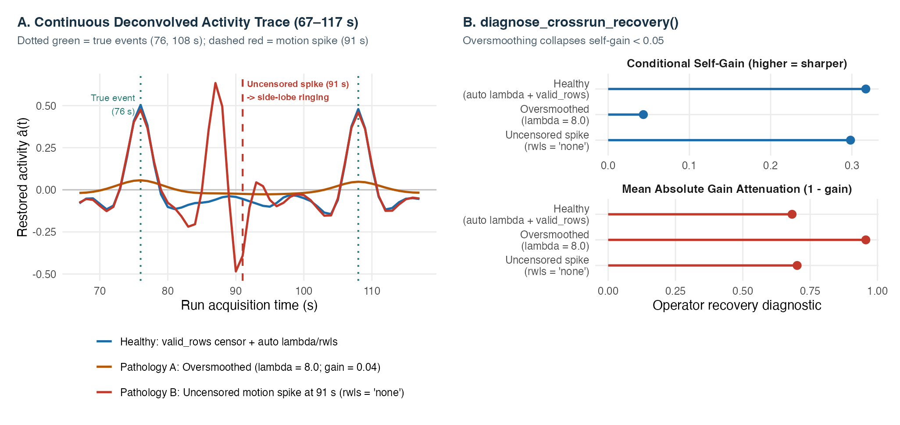
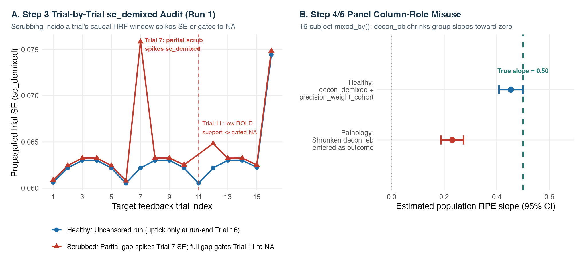
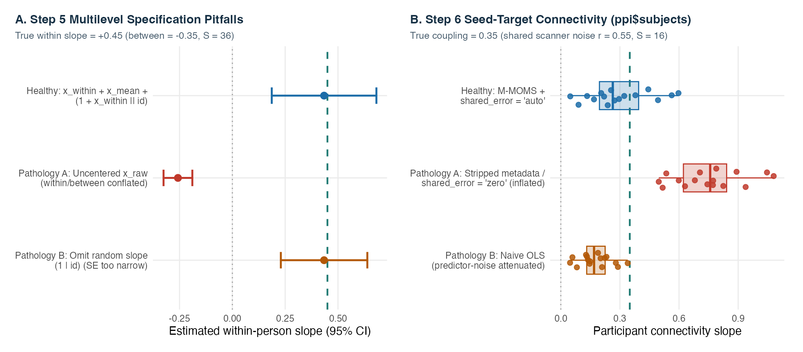

# 1. Step 0: Check motion censoring share, dummy frames, and event clock bounds (in seconds)
print(sub01$confounds$summary[, c("run", "n_volumes", "pct_censored", "n_non_steady_state")])
lapply(split(sub01$events$onset, sub01$events$run), range)
# 2. Step 1: Check out-of-sample HRF task relevance and AR(p) rho stationarity ceiling (0.90)
lapply(hrf_fit$selections, function(s) summary(s$selected_task_p))
lapply(hrf_fit$noise, function(n) quantile(n$rho[, 1], probs = c(0.5, 0.9, 0.99), na.rm = TRUE))
# 3. Step 2: Check deconvolution conditional self-gain and attenuation
diagnose_crossrun_recovery(decon, events = sub01$events)$summary
# 4. Step 3 & 4: Audit trial-level SE distribution and BOLD-coverage NA gating
summary(epochs$panel$se_demixed)
mean(is.na(epochs$panel$decon_demixed))
# 5. Step 5: Verify predictor centering (run/person mean ~ 0) and random-effect singularity
tapply(group_panel$rpe_within, group_panel$id, mean, na.rm = TRUE) |> summary()
# 6. Step 6: Inspect M-MOMS attenuation factor (alpha_final) and shared cross-parcel error
summary(ppi$subjects[, c("estimate", "r_shared_error", "alpha_final", "converged")])Visual QC and Troubleshooting Gallery
Side-by-side healthy versus mis-specified diagnostic signatures across Steps 0–6
Overview
When an end-to-end single-trial fMRI analysis yields unexpectedly weak slopes, implausibly shifted peri-event peaks, or inflated connectivity estimates, identifying which pipeline stage introduced the distortion is much faster when you know the visual signature each failure mode leaves behind. Because MEDuSA preserves explicit diagnostic summaries, operator resolution metrics, and propagated standard errors at every stage (see the end-to-end data-flow schematic), most upstream mis-specifications can be localized in a few lines of R before fitting group models across hundreds of parcels.
The snippet below collects the six fastest pre-flight checks across a completed or pilot participant workflow:
NoteHow to Use This Gallery
Each section below pairs a healthy MEDuSA run (blue) against one or two realistic mis-specifications (red/amber) generated on the same underlying neural ground truth using medusa. Start with the lookup table in the next section to match an observed symptom to its pipeline stage, then jump to the corresponding visual pair for the diagnostic check and remedy.
Quick Symptom-to-Remedy Reference
| Observed symptom | Field or plot to inspect | Underlying mechanism | Recommended remedy |
|---|---|---|---|
Peri-event curve peaks several seconds before 0 s (e.g., at -4 s or -6 s) |
decon_epoch_regression(..., lags = -6:6) lag profile |
Initial dummy volumes were physically dropped from the 4D NIfTI while events$onset stayed referenced to scanner trigger t = 0 (time_offset = 0) |
Keep full 4D runs and mask dummy frames via valid_rows (include_non_steady_state = TRUE), or set time_offset = k * tr (Step 0) |
Task slopes attenuate under task-correlated motion, or noise_sd stays elevated after ICA-AROMA |
sub01$aroma$summary & decon$scaling[[r]]$noise_sd |
Aggressive AROMA stripped shared task-motion variance (Pruim et al., 2015), or uncleaned csf/white_matter confounds re-injected removed motion ICs during Step 1–2 nuisance projection (Lindquist et al., 2019) |
Use aroma = "nonaggressive" with aroma_clean_nuisance = TRUE and strategy = "csf_wm" (Step 0 §0.5) |
Virtually all parcels fail Step 1 task screening (selected_task_p > 0.10) and lag-0 slopes vanish |
range(events$onset) vs. (nrow(Y) - 1) * tr |
Event onsets were supplied in TR indices (or milliseconds) rather than physical seconds, compressing or stretching the forward design | Convert onset and duration to seconds before calling estimate_crossrun_hrf() (Step 0) |
Large fraction of parcels/voxels pile up at rho = 0.90 in Step 1 |
Histogram of hrf_fit$noise[[r]]$rho[, 1] |
Unmodeled scanner shim shifts, low-frequency drift, or respiratory alias forces \(\text{AR}(1)\) autocorrelation onto its stationarity upper bound | Include cosine/polynomial drift (drift_order = 2 or fMRIPrep cosines), mask motion spikes via valid_rows, and use motion_bandstop_bpm for fast-TR runs (Step 1) |
| Deconvolved time series \(\widehat{a}_r(t)\) looks overly flat and Step 3 peaks are blunted | diagnose_crossrun_recovery(decon, events)$summary$mean_gain |
Penalty \(\lambda_v\) was fixed too high (e.g., manual override), collapsing conditional self-gain toward zero | Leave lambda = NULL so Step 2 tunes \(\lambda_v\) automatically per series via GCV/REML (Step 2) |
| Sharp positive/negative ringing lobes appear \(\pm 6\text{--}10\text{ s}\) around isolated frames | Continuous trace decon$deconvolved[[r]] overlaid on confounds FD |
Uncensored head-motion or coil spike with rwls = "none" rings through the inverse Toeplitz filter \(D_r\) |
Pass FD censor mask via valid_rows and keep adaptive rwls = "auto" enabled in Step 2 (Step 2) |
Individual trials show sharp se_demixed spikes or NA estimates |
Trial index vs. panel$se_demixed and is.na(panel$decon_demixed) |
Censoring inside a trial’s causal HRF window reduces Fisher information (elevating se_demixed) or drops BOLD support below min_bold_coverage (NA) |
Expected protective behavior: retain precision_weight_cohort so noisy trials are downweighted automatically; exclude entire runs only when censoring is pervasive (> 25–30%) (Step 3) |
| Group fixed-effect slopes in Step 5 appear ~30–60% smaller than expected | Model formula outcome column (decon_eb vs. decon_demixed) |
Empirical-Bayes shrunken decon_eb was entered as a regression outcome, shrinking group slopes by the trial reliability factor |
Always enter decon_demixed + weights = "precision_weight_cohort" when neural activity is the outcome; reserve decon_eb for visualization or standalone predictor summaries (Step 4) |
Step 5 slope flips sign or has df in the thousands; Step 6 connectivity is inflated or attenuated |
Step 5 formula & df; Step 6 ppi$subjects$r_shared_error |
Uncentered x_raw conflates trait and state slopes; omitting (1 + x_within || id) treats trials as independent; stripping unit_error_cor (shared_error = "zero") disattenuates shared noise |
Center predictors within person/run and include random slopes in Step 5 (Step 5); preserve subject_epochs metadata and keep shared_error = "auto" with method = "mmoms" in Step 6 (Step 6) |
Table 10.1 summarizes the quantitative contrast between the healthy baseline and the mis-specified pipeline in each simulated benchmark shown below.
| Pipeline Stage & Diagnostic Contrast | Healthy Signature | Mis-Specified Signature |
|---|---|---|
Step 0/1: Intact clock vs. dropped dummy TRs (time_offset = 0) |
Peak at 0 s (beta = 0.604) | Shifted to -6 s (lag-0 beta = 0.029) |
Step 0/1: Onsets in seconds vs. TR indices (TR = 2.0 s) |
Task p = 1.59e-143 | Lag-0 beta = 0.041 (schedule compressed) |
Step 1: Clean BOLD vs. unmodeled shim drift (rho >= 0.89 share) |
0.0% at ceiling (median rho = 0.49) | 100.0% at 0.90 ceiling (median rho = 0.90) |
Step 2: Auto lambda vs. oversmoothed lambda = 8 (mean_gain) |
mean_gain = 0.317 | mean_gain = 0.043 (flat activity) |
| Step 3: Uncensored trial SE vs. partial-scrub shadow Trial 7 SE | Median interior SE = 0.062 | Trial 7 SE = 0.076; Trial 11 = NA |
Step 4/5: decon_demixed vs. shrunken decon_eb slope (truth = 0.50) |
beta = 0.454 [0.408, 0.499] | beta = 0.231 [0.188, 0.274] |
Step 5: Centered random-slope lmer vs. uncentered / no-random-slope |
beta = 0.434 (SE = 0.122, df = 35.0) | Uncent. beta = -0.258; No-RS SE = 0.104 (df = 573) |
| Step 6: Seed connectivity (truth = 0.35; M-MOMS auto vs. lost shared_error / naive) | beta = 0.295 [0.209, 0.382] | Lost shared_error = 0.751; Naive = 0.178 |
Visual Diagnostic Pairs Across the Pipeline
1. Steps 0 & 1: Event-Clock Shifts, Onset-Unit Errors, and AR(1) Ceiling Pile-Ups

0.60 at lag 0 s, TR = 2.0 s) recovered cleanly when initial dummy volumes are masked via valid_rows (blue), versus physically dropping 3 dummy volumes without setting time_offset = 6 (solid red, shifting the recovered peak backward to -6 s) or supplying events$onset in TR indices rather than seconds (dashed amber, compressing all events into the first half of the scan and destroying the association). B: Parcel-level hrf_fit$noise$run1$rho across 36 parcels (true \(\rho \in [0.30, 0.62]\)) on detrended BOLD (blue) versus BOLD contaminated by an unmodeled mid-run shim step and low-frequency drift (red, pinning 100% of parcels against the 0.90 stationarity ceiling).
What to look for in Figure 10.1:
- Event-clock shifts (Panel A, solid red): If an external script slices \(k\) initial dummy volumes out of the 4D NIfTI file (
Y <- Y[-c(1:k), ]) whileevents.tsvremains referenced to the first scanner trigger (time_offset = 0), row 1 of the matrix is actually acquired at \(t = k \cdot \text{TR}\) rather than \(t = 0\). Every neural response then appears in the BOLD record \(k \cdot \text{TR}\) seconds earlier than the event table expects—producing an unmistakable “pre-stimulus” peak at \(-k \cdot \text{TR}\) (-6 shere for 3 dropped2.0 svolumes) and near-zero effect at0 s. - Onset-unit mismatches (Panel A, dashed amber): Passing 0-based or 1-based volume indices instead of seconds when \(\text{TR} \ne 1.0\text{ s}\) rescales the entire task timeline by \(1 / \text{TR}\). Step 1’s cross-run HRF selector finds almost no out-of-sample variance explained (
selected_task_pshifts toward uniform noise), and Step 3 lag profiles flatten to zero. - Stationarity ceiling pile-ups (Panel B, red): Step 1 bounds REML \(\text{AR}(p)\) roots inside a causal, stationary region (
rho <= 0.90for \(\text{AR}(1)\)) so prewhitening stays invertible. A natural physiological distribution spans roughly0.25–0.70depending on \(\text{TR}\). When a large share of parcels stacks directly on0.90, the noise model is absorbing deterministic low-frequency drift, coil/shim jumps, or unmasked motion bursts rather than stationary innovations.
# Diagnostic check & remedy for Steps 0-1
stopifnot(max(sub01$events$onset) <= max(sub01$confounds$summary$n_volumes) * sub01$tr)
mean(hrf_fit$noise$run1$rho[, 1] >= 0.89, na.rm = TRUE) # healthy: typically < 0.05
# Remedy: keep intact 4D runs + valid_rows, and ensure drift + FD censoring are active
sub01 <- read_fmriprep_subject(..., strategy = "24p", fd_threshold = 0.5, include_non_steady_state = TRUE)
hrf_fit <- estimate_crossrun_hrf(sub01, kernel_grid = candidates, drift_order = 2L, pooling = "parcel")For full walkthroughs of clock-preserving ingestion and prewhitening choices, see Step 0 and Step 1.
2. Step 2: Over-Smoothing Gain Collapse and Uncensored Spike Ringing

67–117 s of Run 1 containing two true neural events (76 s and 108 s, green dotted lines) and a framewise motion artifact at 91 s (red dashed line). Healthy deconvolution with valid_rows censoring and automatic \(\lambda_v\) / RWLS recovers crisp phasic peaks at 76 s and 108 s while suppressing 91 s (blue). Fixing lambda = 8.0 flattens true neural peaks nearly to zero (amber), whereas leaving the 91 s spike uncensored with rwls = "none" produces strong positive and negative deconvolution ringing lobes across 82–96 s (red). B: diagnose_crossrun_recovery() immediately flags over-smoothing via collapsed mean_gain (0.043 vs. 0.317), whereas uncensored spike artifacts leave deterministic operator mean_gain almost unchanged (0.300) and therefore require inspecting censoring masks or RWLS weights.
What to look for in Figure 10.2:
- Gain collapse from over-regularization (amber): Because continuous deconvolution trades variance reduction against temporal shrinkage via the resolution matrix \(D_r H_r\), setting
lambdamanually to a large value crushes the diagonal self-gain ofdiagnose_crossrun_recovery()below0.05. Notice thatdeconvolve_crossrun_hrf()scales penalties cleanly whenscaling = "noise_sd"andlambda = NULL; manuallambdaoverrides are rarely needed outside sensitivity analyses. - Why spike ringing requires both operator and residual/weight checks (red): Look closely at Panel B: the uncensored spike run (
rwls = "none", novalid_rowsmask) still reports a healthy-lookingmean_gain = 0.300indiagnose_crossrun_recovery(). That is becausemean_gainaudits the linear operator \(D_r H_r\), which depends on the HRF, run schedule, and \(\lambda_v\)—not on an isolated BOLD outlier in \(y_r\). An unmasked motion spike acts like a delta impulse that does not follow the slow hemodynamic shape \(h_r\); inverting \(H_r\) therefore surrounds the spike with alternating positive and negative side-lobes across neighboring timepoints. Masking high-FD frames viavalid_rows(Step 0) and keepingrwls = "auto"(Step 2) prevents these artifacts from contaminating nearby trials.
# Check both operator gain AND adaptive RWLS outlier downweighting
rec <- diagnose_crossrun_recovery(decon, events = sub01$events)
print(rec$summary[, c("run", "mean_gain", "mean_abs_gain_error", "mean_abs_excess_leakage")])
# Inspect minimum RWLS observation weights per run (weights << 1 indicate downweighted residual spikes)
lapply(decon$rwls_weights, function(w) quantile(w, probs = c(0, 0.01, 0.05, 0.5), na.rm = TRUE))For details on Sobolev versus ridge penalties, scaling = "noise_sd", and rwls = "auto", see Step 2.
3. Steps 3 & 4: Motion-Scrubbing Shadows in Trial SEs and Shrunken Outcome Misuse

se_demixed) across 16 feedback trials in Run 1. In an uncensored run (blue), interior trials share uniform precision (se_demixed \(\approx 0.062\)) with an expected uptick only on Trial 16 (215.5 s, whose causal HRF tail is truncated by scanner shutoff at 220 s). When 3 frames on Trial 7’s HRF peak are motion-scrubbed (red), se_demixed spikes selectively at Trial 7 (0.076) so downstream precision weights downweight it automatically; when 10 frames covering Trial 11’s HRF are scrubbed, min_bold_coverage gates Trial 11 cleanly to NA (red dashed line). B: Entering decon_demixed + precision_weight_cohort in mixed_by() across 16 participants recovers the generating slope (0.454 vs. truth 0.50, blue), whereas mistakenly entering empirical-Bayes shrunken decon_eb as the outcome shrinks the estimated population slope nearly in half (0.231, red).
What to look for in Figure 10.3:
- Protective
se_demixedspikes vs. run-wide degradation (Panel A): Seeing isolated spikes inpanel$se_demixed(like Trial 7) or run-boundary upticks (like Trial 16) is not a software bug—it is the propagated sandwich covariance \(\Omega_{r,\tau}\) faithfully recording where censored frames or run-end truncation reduced effective BOLD observations inside that event’s hemodynamic window. Whenprecision_weight_cohortis passed tomixed_by(), Trial 7 receives lower inverse-variance weight automatically, and Trial 11 (NA) is omitted without shiftingevent_index. Intervention is only warranted when a run has so many censored frames that most trials sit at elevatedse_demixedorNA. - Outcome vs. predictor column roles in Step 4 panels (Panel B): Step 4 exports both unshrunken
decon_demixed(\(\widehat{z}_{ri} = \theta_{ri} + e_{ri}\)) and empirical-Bayes shrunkendecon_eb(\(\tilde{z}_{ri} \approx \bar{z} + \kappa_{ri}(\widehat{z}_{ri} - \bar{z})\), where \(\kappa_{ri} = \widehat{\tau}^2 / (\widehat{\tau}^2 + s_{ri}^2) < 1\)). Enteringdecon_ebon the left-hand side ofmixed_by()multiplies the true fixed-effect slope by \(\bar{\kappa} < 1\) (0.231vs.0.454here), biasing population inference toward zero.
# Audit per-run NA gating rate and high-SE tail in Step 3/4 panels
panel_dt <- data.table::as.data.table(epochs$panel)
panel_dt[, .(
pct_gated_na = 100 * mean(is.na(decon_demixed)),
median_se = median(se_demixed, na.rm = TRUE),
p95_se = quantile(se_demixed, 0.95, na.rm = TRUE)
), by = run]
# Always pair decon_demixed + precision_weight_cohort when neural activity is the outcome
group_models <- mixed_by(group_panel, outcomes = "decon_demixed",
rhs_model_formulae = ~ rpe_within + (1 + rpe_within || id) + (1 | id:run),
split_on = c("parcel", "evt_time"), weights = "precision_weight_cohort")For full guidance on min_bold_coverage, (T, O) de-mixing, and column-role assignment, see Step 3 and Step 4.
4. Steps 5 & 6: Multilevel Centering/Random-Slope Pitfalls and Connectivity Shared Noise

16 target trials/person) where true within-person trial coupling is +0.45 but between-person trait coupling is -0.35 with participant slope SD 0.42, decomposing x_within + x_mean with (1 + x_within || id) recovers +0.434 (df = 35, blue). Entering uncentered x_raw conflates within- and between-person variance and flips the estimated slope to -0.258 (red), while omitting the random slope (1 | id) understates uncertainty with pooled-trial degrees of freedom (df = 573, amber). B: Participant connectivity slopes (ppi$subjects, term == "seed_c") across 16 participants where true seed-to-target neural coupling is 0.35 and shared cross-parcel measurement error is \(r_{ST} = 0.55\). M-MOMS with shared_error = "auto" recovers 0.295 (blue); stripping unit_error_cor / shared_noise_loading (shared_error = "zero") disattenuates shared noise up to 0.751 (red); naive OLS without measurement-error repair attenuates down to 0.178 (amber).
What to look for in Figure 10.4:
- Within/between conflation and inflated degrees of freedom in Step 5 (Panel A): Any predictor that varies both across trials within a person (e.g., trial-by-trial RT, value, arousal) and in mean level across people (fast vs. slow responders, high vs. low baseline value) carries two distinct biological associations. Entering raw
x_rawforceslmer()to estimate a precision-weighted blend of \(\beta_{\text{within}}\) and \(\beta_{\text{between}}\)—which can attenuate or even reverse the sign of the trial effect (-0.258vs.+0.45). Equally important, inspect thedfcolumn ofcoef_df_reml: a within-person fixed effect tested across \(S = 36\) participants should have Satterthwaitedfnear \(S - 1\) (35), never in the hundreds (573), which signals that the random slope(1 + x_within || id)was omitted or collapsed to zero. - Asymmetric bias modes in Step 6 connectivity (Panel B): When deconvolved seed activity moves to the right-hand side as a noisy predictor (
Target ~ Seed * Task), two opposing biases act simultaneously: seed estimation variance \(s_{S,i}^2\) attenuates naive OLS toward zero (0.178), while correlated scanner/physiological noise shared across parcels (\(r_{ST} > 0\)) inflates coupling. If you exportpanelto a plain.csvfile withoutshared_noise_loadingor the participantunit_error_cormatrix (forcingshared_error = "zero"), M-MOMS subtracts seed error variance in the denominator without subtracting shared error covariance in the numerator—magnifying shared noise (0.751). Passing the intactsubject_epochslist (or preservingshared_noise_loadingin tabular exports) allowsshared_error = "auto"to correct both terms simultaneously (0.295).
# Step 5 audit: check Satterthwaite df on within-person terms (should scale with N_subjects, not N_trials)
subset(group_models$coef_df_reml, term == "rpe_within")[, c("parcel", "evt_time", "estimate", "std.error", "df")]
# Step 6 audit: confirm r_shared_error is non-zero when expected and check convergence
ppi <- decon_connectivity_repair(
subject_epochs, seed_region = "Seed", target_region = "Target",
covariates = "x_within", shared_error = "auto", method = "mmoms"
)
summary(ppi$subjects[, c("r_shared_error", "alpha_final", "converged")])For complete coverage of group trajectory modeling and M-MOMS connectivity repair, see Step 5 and Step 6.
Simulation Details & Reproduction
All four healthy-versus-pathological figure pairs and Table 10.1 are generated from live medusa calls (estimate_crossrun_hrf(), deconvolve_crossrun_hrf(), diagnose_crossrun_recovery(), decon_epoch_regression(), mixed_by(), and decon_connectivity_repair()) with fixed seed 20261116:
- Pair 1 (Steps 0 & 1): 3 runs \(\times\) 140 volumes at
TR = 2.0 s, 16 jittered feedback events/run with true lag-0 RPE slope0.60; comparesvalid_rowsdummy masking (1:3) against physical truncation (Y[-c(1:3), ]withtime_offset = 0) and onset-unit mis-specification (on_sec / tr_slow). Step 1rhocheck simulates 36 parcels (true rhouniform on[0.30, 0.62]) with and without an unmodeled mid-run shim step +0.008 Hzdrift. - Pair 2 (Step 2): 3 runs \(\times\) 180 volumes at
TR = 1.0 s; comparesvalid_rowscensoring + automatic GCV \(\lambda_v\) +rwls = "auto"againstlambda = 8.0and an uncensored91 sspike withrwls = "none". - Pair 3 (Steps 3 & 4): 3 runs \(\times\) 220 volumes (
16trials/run, Trial 16 at215.5 s), comparing uncensoredse_demixedagainst partial peak scrubbing on Trial 7 (3frames) and full HRF scrubbing on Trial 11 (10frames); plus a 16-participant cohort comparingdecon_demixed+precision_weight_cohortagainst shrunkendecon_ebas outcome inmixed_by()(true slope0.50). - Pair 4 (Steps 5 & 6): Step 5 simulates \(S = 36\) participants (
16target trials/person, \(\beta_{\text{within}} = +0.45\), \(\beta_{\text{between}} = -0.35\), random slope SD0.42). Step 6 simulates \(S = 16\) participants (80trials/person, true seed-target slope0.35, shared cross-parcel error correlation \(r_{ST} = 0.55\), trial SE0.75).
QC simulation script · QC figure script · Symptom benchmark CSV · Session info